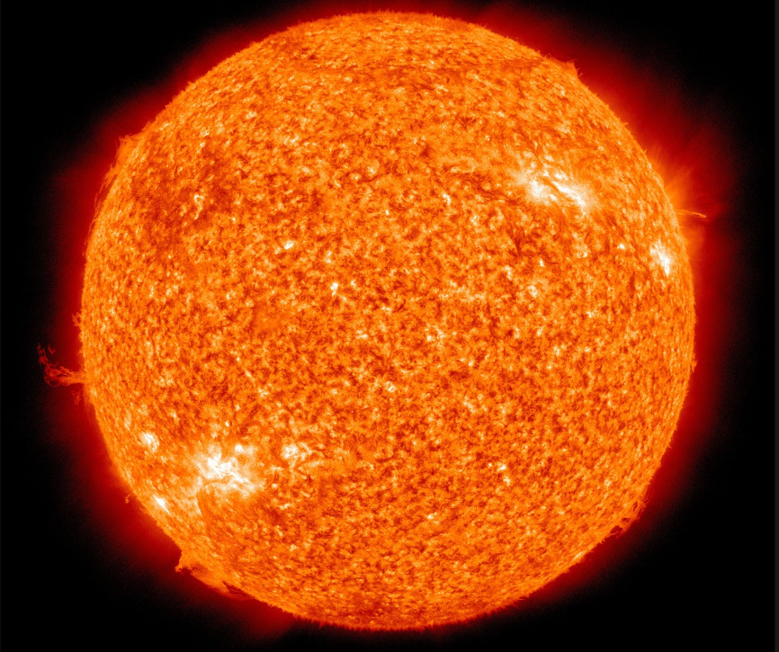

The Sun
The Sun is a star located at the centre of our solar system. It provides the energy that supports life on Earth and influences the motion of all the planets.
Made mostly of hydrogen and helium, the Sun produces energy through nuclear fusion. This process releases enormous amounts of heat and light, which travel across space.

Facts About the Sun
- The Sun is a star, not a planet.
- It contains about 99.8% of the mass of the solar system.
- The Sun`s surface temperature is around 5,500°C.
- Energy from the Sun takes about 8 minutes to reach Earth.
- The Sun is about 4.6 billion years old.